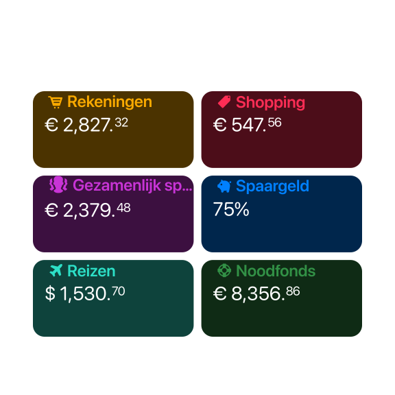
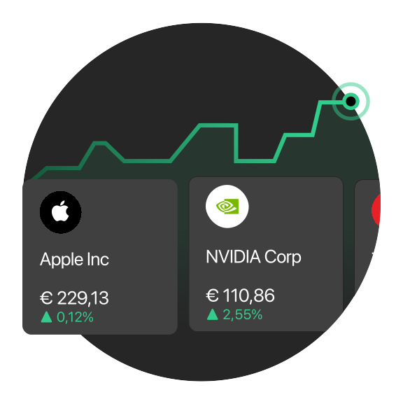
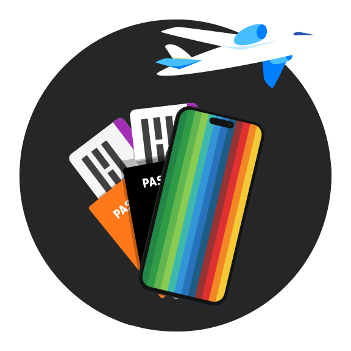
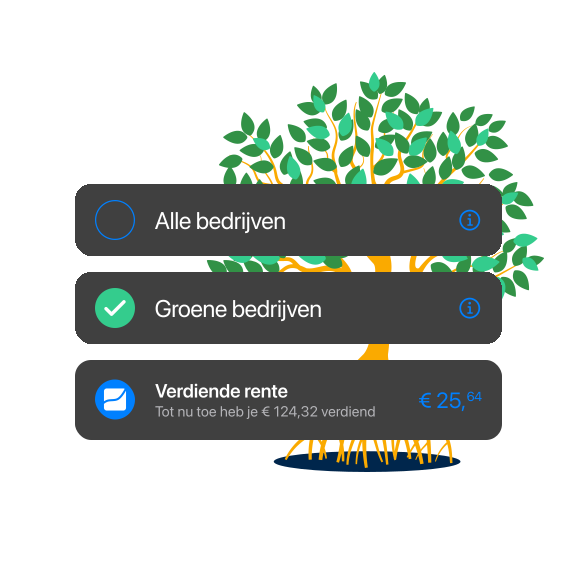
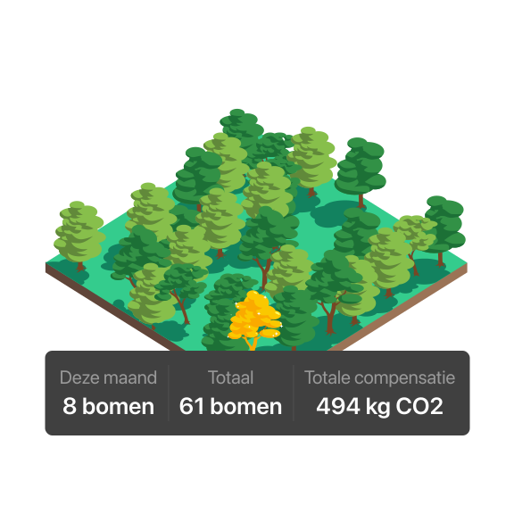

Eindelijk, een bank die je leven makkelijk maakt
Geen onbegrijpelijke termen, geen wachttijden. Gewoon slimme tools om
je geld te beheren zoals jij wilt.
Alles helder in beeld
Organiseer je uitgaven, spaargeld en vaste lasten zoals jij dat
wilt. Maak eenvoudig aparte rekeningen, elk met een eigen IBAN. Je
kunt vanaf elke rekening geld overmaken, incasso's laten afschrijven
of betalen met je bunq pas.
Meer

Een pas die overal werkt
Zodra je begint, krijg je een digitale creditcard die je kunt
gebruiken met Apple Pay of Google Pay. Voor eenvoudig budgetteren
kun je je pas koppelen en betalen vanaf al je bankrekeningen. Je
fysieke pas kun je zelf ontwerpen, zodat hij helemaal uniek is.

Bespaar terwijl je uitgeeft
Profiteer van de beste wisselkoersen met ZeroFX en spaar bunq Punten
om exclusieve beloningen te ontgrendelen. Gebruik je bunq pas en zie
de extra waarde oplopen!
Meer

Koop & verkoop crypto direct vanuit je bunq app
Aan de slag met crypto direct vanuit je bunq app. Kies uit de beste
cryptovaluta – kopen en verkopen gaat met slechts één tik. Je
transacties zijn beschermd met twee-factor-authenticatie en
encryptie.
Meer

Simpel starten met investeren
Om aandelen te kopen hoef je geen aparte trading-apps te installeren
of eindeloos papierwerk door te nemen. Laat je vermogen eenvoudig
groeien, zonder stress. Alles wat je nodig hebt vind je in de bunq
app.
Meer

Ga zorgeloos op reis
Bespaar tot 90% op roamingkosten met een eSIM, direct vanuit je bunq
app. Data op? Je kunt je eSIM overal opladen, ook als je even geen
internetverbinding hebt. Met bunq Elite krijg je elk jaar 8 GB
gratis wereldwijde data en ben je automatisch beschermd op al je
reizen dankzij de inbegrepen reisverzekering
* Voorwaarden van toepassing
Meer

Laat je spaargeld moeiteloos groeien
Profiteer van hoge spaarrentes, tot wel 50% hoger dan bij
traditionele banken. Je rente wordt wekelijks uitbetaald, waardoor
je met samengestelde rente na verloop van tijd nog meer verdient!
Met Automatisch Sparen rond je iedere betaling naar boven af, en vul
je je spaargeld aan zonder dat je er omkijken naar hebt.
* Voorwaarden van toepassing
Meer

Nodig je vrienden uit en ontgrendel exclusieve beloningen
Ken je iemand die een bankrekening nodig heeft? Geef ze een
voorsprong met bunq. Wanneer je vriend lid wordt, ontvangen jullie
allebei beloningen zoals een gratis Metal Card, extra bonusrente of
drie maanden gratis handelen in aandelen.
Meer

Leg een gegarandeerde rente vast.
Verdien tot 2,11% jaarlijkse rente op je spaargeld. Zet je geld
opzij en geniet van een gegarandeerde rente voor de door jou gekozen
looptijd.
Ontdek termijndeposito's

Kies waar wij je deposito's opslaan
In tegenstelling tot traditionele banken geeft bunq jou de controle.
Wij zijn de enige bank waarbij jij bepaalt waar je geld wordt
geïnvesteerd. We investeren ethisch, en jij kiest in de app de
sectoren die bij jouw waarden passen. Zo draagt jouw geld bij aan
een duurzamere economie – een die overeenkomt met jouw idee van een
betere toekomst.
Meer

Compenseer je CO2
Als je met je bunq pas betaalt, spaar je bomen. Elke boom die je
spaart wordt op het juiste moment, op de juiste plek geplant en de
groei ervan nauwlettend gevolgd door onze partner veritree. In de
bunq app zie je de positieve impact van jouw bomen in de loop van de
tijd. Zo draag je met elke aankoop gemakkelijk bij aan een
duurzamere planeet.
Meer

Veelgestelde vragen
Wat is bunq
bunq is de digitale bank die het gedoe van geldbeheer uit de weg
ruimt. Makkelijk sparen, budgetteren en handige reisfuncties - met
bunq kun je je richten op wat echt telt.
Is bunq een Nederlandse bank?
Ja! bunq heeft zijn hoofdkantoor in Nederland en is een van de meest
innovatieve banken van Europa.
Is bunq een onafhankelijke bank
bunq werd in 2012 in Nederland opgericht door Ali Niknam als een
technologiegedreven challenger-bank, met een focus op innovatie,
transparantie en eenvoud. In 2015 lanceerden we de bunq-app – de
eerste nieuwe bank in 35 jaar die een Europese bankvergunning kreeg
– en sindsdien dagen we de traditionele banken uit.
Wat maakt bunq een veilige bank?
Bij bunq is je geld volledig veilig en beschermd onder het
Nederlandse Depositogarantiestelsel (DGS), dat dekt spaargeld tot
€100.000. We gebruiken de nieuwste technologie om je financiële
gegevens te beschermen, waardoor je een vlotte en veilige
bankervaring hebt.
Hoeveel rekeningen kun je hebben bij bunq?
Met de bunq Pro- en bunq Elite-abonnementen kun je tot wel 25
persoonlijke rekeningen openen en beheren. Of je nu je financiën
wilt organiseren of je spaargeld wilt categoriseren: bunq maakt
bankieren en budgetteren simpel en efficiënt.